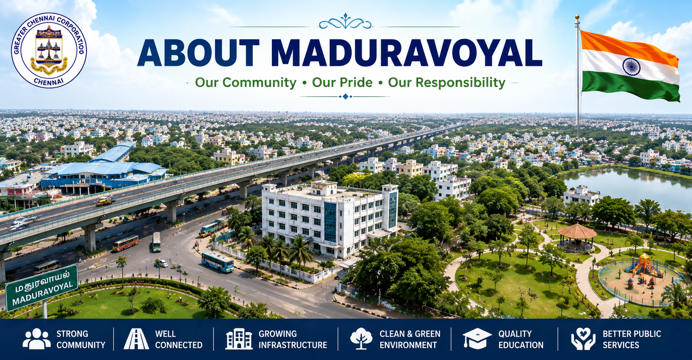

Learn about the history, development, administration and importance of
Madhuravoyal under the Indian Constitution and Local Government.

About Madhuravoyal
Madhuravoyal is one of the fastest developing localities situated in the western part of Chennai, Tamil Nadu. It is well connected by major highways, flyovers, and public transportation facilities, making it an important residential and commercial destination. The locality has witnessed remarkable urban growth over the past few decades, attracting families, educational institutions, healthcare centres, shopping complexes, and business establishments.
The area comes under the Greater Chennai Corporation, which is responsible for maintaining public infrastructure and providing essential civic services. Roads, drainage systems, waste management, drinking water supply, street lighting, and public parks are regularly maintained for the benefit of residents. Continuous development has transformed Madhuravoyal into a modern urban neighbourhood that supports both residential and commercial activities.
The Indian Constitution plays an important role in ensuring that every citizen receives equal access to government services. Local bodies function according to constitutional principles and work towards improving the quality of life through transparent administration and public participation.
History of Madhuravoyal
Historically, Madhuravoyal was a small suburban region located on the outskirts of Chennai. As the city expanded, the locality gradually developed into an important urban centre due to its strategic location and excellent transportation network. The construction of major roads and flyovers significantly improved connectivity with other parts of Chennai.
With increasing population and infrastructure development, several schools, colleges, hospitals, shopping centres, and residential communities were established. Today, Madhuravoyal has become one of the preferred residential locations for working professionals because of its accessibility and public amenities.
Development of the Area
The Greater Chennai Corporation continuously undertakes development projects to improve roads, drainage facilities, public sanitation, waste management systems, parks, and street lighting. These projects aim to create a clean, safe, and environmentally friendly living environment for residents.
Digital governance has also improved public administration by allowing citizens to access various government services online. Residents can apply for certificates, pay taxes, submit complaints, and monitor public service requests through official government portals, making governance more transparent and efficient.
Education in Madhuravoyal
Education plays an important role in the development of Madhuravoyal. The locality is home to several government and private schools, colleges, coaching centres, and technical institutions that provide quality education to students. Modern classrooms, experienced teachers, digital learning facilities, and extracurricular activities help students improve both academically and personally.
Many students from nearby areas also choose educational institutions in Madhuravoyal because of their good reputation and accessibility. Educational development has contributed significantly to the overall growth of the locality and has created opportunities for higher education and professional careers.
Healthcare Facilities
Madhuravoyal has several hospitals, clinics, pharmacies, diagnostic centres, and healthcare facilities that provide quality medical services to the public. Government hospitals and private healthcare institutions work together to offer emergency care, outpatient services, vaccination programmes, maternal healthcare, and specialised treatments.
The availability of quality healthcare facilities ensures that residents receive timely medical attention and promotes a healthy community. Regular health awareness programmes are also conducted to educate people about hygiene, disease prevention, and healthy living.
Transportation
Madhuravoyal is well connected to different parts of Chennai through buses, taxis, metro connectivity nearby, and major highways. The Chennai Bypass Road and important flyovers make transportation easier for daily commuters and commercial vehicles. Good road connectivity has helped increase business activities and residential development in the locality.
Public transportation plays an essential role in reducing travel time and improving accessibility to schools, colleges, hospitals, shopping centres, and workplaces. Continuous road improvement projects help ensure safe and efficient transportation for residents.
Quick Facts
Category
Details
State
Tamil Nadu
District
Chennai
Area
Madhuravoyal
Local Administration
Greater Chennai Corporation
Official Language
Tamil
Country
India
Important Features of Madhuravoyal
Excellent Road Connectivity
Modern Residential Areas
Educational Institutions
Hospitals and Healthcare Centres
Shopping Complexes
Parks and Recreation Areas
Commercial Development
Citizen Responsibilities
Keep the locality clean.
Follow traffic rules.
Protect public property.
Pay taxes responsibly.
Respect the Constitution.
Participate in local elections.
Support environmental conservation.
Importance of Local Government
Local Government is the closest level of government to the people. It understands the day-to-day needs of citizens and provides essential public services such as sanitation, water supply, road maintenance, street lighting, waste management, and public health. Active participation of citizens helps local authorities improve these services and create a better living environment for everyone.
Help
This page provides educational information about Madhuravoyal and its local administration. Students and citizens can use this information to understand how local government functions under the Indian Constitution. For more information, users can visit the official government websites or contact the local administrative offices.